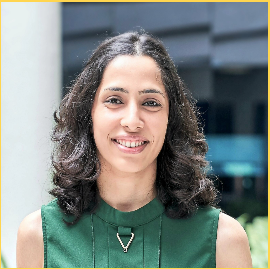
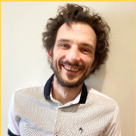

A gathering to discuss the emerging dilemmas around the principles and practice of computational social science research in a changing technological landscape.
Motivation
In the past decade, many sophisticated AI-powered tools have been developed and released to the scientific community and the public at large. At the same time, the socio-technical platforms that are at the center of our observations have transformed in unanticipated ways. Many of these developments have occurred against a backdrop of political and social polarization, and, public health and macroeconomic crises, which offer multiple lenses to contextualize (or distort) scientific reflexivity. To computational social scientists who study computer-mediated human behavior, these on- and offline changes have real implications on whom they study, and how they study them. How, then, should the ICWSM community members act in such a changing world? Which disruptions should they embrace and which ones should they resist? Whom do they ally with, and for what purpose? In this workshop, we invite experience-based perspectives on these issues, aimed at debating and drafting a future research agenda that we want to pursue together. The goal of this full-day workshop is to facilitate collaboration on position papers among its attendees, each of which must propose an actionable item for future computational science research.
Participate
In order to participate in the workshop, we invite two types of submissions:
- Short, 200-word statements of interest that express a desire to participate in the workshop discussion, by positioning oneself with respect to the issues discussed below.
- Slightly longer, 2-page (in AAAI format) extended abstracts that detail one’s position on one of the issues discussed below. Accepted abstracts will appear in the workshop proceedings.
Both types of submissions can be made at the submission portal on Easychair. Given limited space, preference will be given to those who submitted extended abstracts.
The position papers should, at a high level, address concerns with processes of and the principles underlying computational social science research, and how they are often, and repeatedly, disrupted by platform politics, new technologies, their implications, and their unknowables. By problems of process, we refer to, for example, the fact that the increasing availability of proprietary AI tools has created challenges for the research process. With respect to issues of principle, we refer to the fact that recent events related to questionable technology takeovers and layoffs, exposes on techno-political alliances, and questionable labor practices at large technology companies create new dilemmas for researchers collecting, annotating, and analyzing online data.
Position papers should be grounded in evidence, prior published work, and ideally, also personal experiences. Examples of the position papers we seek can be found here, here, here, or they can be responses to news stories like this one. Ideally, position papers should respond to the provided prompts below (i.e., concerns about processess and principles), although we will also consider papers that do not explicitly respond to a prompt, but discuss an interesting and relevant problem pertinent to this discussion.
Prompts
![1. What are the key principles that should guide the development and use of large language models, and how can we ensure that they are adhered to in practice? 2. Do the model cards speak to the generalizability of large language models across different domains and languages? Are they sufficiently detailed? 3. How can we ensure the reproducibility and replicability, particularly in light of their complexity and resource requirements? 4. How can we ensure that output evaluation is appropriate and meaningful? 5. How can we promote responsible and ethical research practices in the development and use of large language models, particularly given their potential impact on society? 6.What are the most promising approaches for mitigating bias and improving fairness in large language models, and how can we ensure that they are implemented in practice?](img/01prompt_llm.svg)
![1. How can we ensure that the use of AI and LLMs in peer reviewing is transparent, fair, and accurate, and how can we address concerns about the potential impact on human reviewers and the quality of research? 2. What are the biggest challenges faced by peer reviewers and editors in the current research landscape, and how have these challenges been exacerbated by the pandemic? 3. What are the potential benefits and drawbacks of using AI and LLMs for peer reviewing and research assessment, and what are the ethical considerations that need to be taken into account? 4. What are the most effective strategies for improving the peer review process, such as breaking down the reviewing process into multiple stages or implementing incentives for reviewers? 5. What are the most effective strategies for improving the peer review process, such as breaking down the reviewing process into multiple stages or implementing incentives for reviewers? 6. What are the most effective strategies for improving the peer review process, such as breaking down the reviewing process into multiple stages or implementing incentives for reviewers?](img/02prompt_review.svg)
![1. What are the most promising technological solutions for enabling secure and privacy-preserving data sharing, and how can we ensure that these solutions are accessible and scalable for researchers? 2. What are potential new paradigms to promote collaboration and knowledge-sharing among researchers working on large datasets across different disciplines and institutions? 3. How can we develop paradigms of mutual benefit between researchers and companies/platforms to encourage data sharing for research purposes, and what are the key components of such paradigms? 4. What are the potential impacts of sharing intellectual property on innovation and creativity, and how can we ensure that the incentives for innovation and creativity are maintained in the context of shared intellectual property? 5. How can we promote responsible and ethical research practices in the development and use of new technology in industry, particularly given their potential impact on society? 6. What are the challenges that companies/platforms face in sharing data for research purposes, and how can researchers and policymakers work to address these challenges?](img/03prompt_data.svg)
Submit
Clicking here will take you to our EasyChair page.
Important Dates
- Workshop Papers Submissions:
March 27, 2023April 03, 2023 (2 page submission), April 17 (200 word statement) - Workshop Paper Acceptance Notification:
April 10, 2023April 17, 2023 - Workshop Final Camera-Ready Paper Due: May 6, 2023
- ICWSM-2023 Workshops Day: June 5, 2023
Program
This is a full-day workshop. Our goal is to provide a venue in which participants will engage with the listed issues through various formats: keynote speakers and panels, collaborative debate-style breakouts, and lightning sessions.
Depending on whether participants (those who are invited or who will apply to participate) are able to present in person or remotely, we will create a program to take into account how to best serve both audiences. Therefore, more details on the program will be posted in the future weeks.
Speakers

David Lazer is a University Distinguished Professor of Political Science and Computer Sciences, Northeastern University, and Co-Director, NULab for Texts, Maps, and Networks. He is among the leading scholars in the world on misinformation and computational social science and has served in multiple leadership and editorial positions, including as a board member for the International Network of Social Network Analysts (INSNA), reviewing editor for Science, associate editor of Social Networks and Network Science, and numerous other editorial boards and program committees.
Dr. Lazer is currently the PI in a five-year, $15.7 million research grant funded by the NSF, that aims to establish a National Internet Observatory, to observe online human behavior across many digital platforms. The observatory will provide access to privacy-preserving human data to third-party researchers in order to study questions of broad interest. Dr. Lazer will discuss this project in the panel on Data sharing and Industry-Academic Collaborations.

Saiph Savage is an Assistant Professor at Northeastern University in the Khoury College of Computer Sciences where she conducts research at the intersection of Human Computer Interaction, A.I., and Civic Technology. Dr. Savage is one of the 35 Innovators under 35 by the MIT Technology Review. Her work has been covered in the BBC, Deutsche Welle, the Economist, and the New York Times, as well as published in top venues such as ACM CHI, CSCW, AAAI ICWSM, and the Web Conference, where she has also won honorable mentions and impact awards.
Dr. Savage is helping to co-lead the International Panel for the Information Environment (IPIE), which will establish a global scientific effort to independently analyze systems of information manipulation and bias, and evaluate the best policy solutions for addressing threats to that environment. One of the main goals of the IPIE is to engage researchers from the Global South. In her talk, Dr. Savage will discuss strategies for building alliances and we will brainstorm together about this topic.

João Sedoc is an Assistant Professor of Information Systems in the Department of Technology, Operations and Statistics at New York University Stern School of Business. He is also affiliated with the Center for Datascience ML^2 Lab at NYU. His research areas are at the intersection of machine learning and natural language processing. His interests include conversational agents, hierarchical models, deep learning, and time series analysis. Before joining NYU Stern, he worked as an Assistant Research Professor in the Department of Computer Science at Johns Hopkins University. He received his PhD in Computer and Information Science from the University of Pennsylvania.
Dr. Sedoc has extensive experience in building empathetic chatbots. He will be sharing his perspective on the future of generative AI technologies in the panel on Large Language Models.

Dr. Rebekah Tromble is Associate Professor in the School of Media and Public Affairs and Director of the Institute for Data, Democracy, and Politics (IDDP) at George Washington University. She recently joined George Washington University after spending eight years in the Institute of Political Science at Leiden University in the Netherlands.
Dr. Tromble will be talking on the panel on Data sharing and Industry-Academic Collaborations on the basis of her experience leading a large research project, funded by Twitter. This project brings together a team of international researchers from both the social and computer sciences to investigate the ``health’’ of political conversations on Twitter. The project is developing metrics for assessing the extent of phenomena such as echo chambers, incivility, and intolerance across political topics, different geographical regions, and languages.
Dr. Laura Nelson is an assistant professor of sociology at the University of British Columbia. In her work, she uses computational methods to study social movements, culture, gender, institutions, and the history of feminism. She is particularly interested in developing transparent and reproducible text analysis methods for sociology using open-source tools. Laura’s work has been published in a range of outlets, including the American Journal of Sociology, Poetics, and Sociological Methods & Research, among others.
Dr. Laura Nelson will be talking on the panel on large language models.
Organizers

Kokil Jaidka
National University of Singapore
Eni Mustafaraj
Wellesley College

David Schoch
GESIS
Kenny Joseph
University of Buffalo